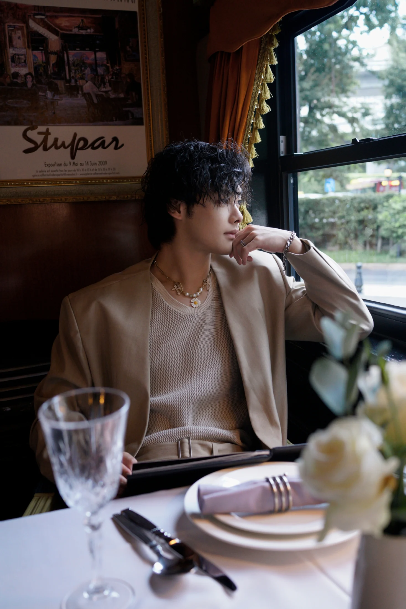

THE PERSONAL EDITIONGUANGZHOU, CHINA
HELLO, I'M AXING
把好奇，
过成日常。
我是阿星，叶昊霖。
以美术为起点，在内容创作里表达，
也在旅行与运动中，发现生活的另一面。
Creator. Explorer. Me.不止一种可能

01 / ABOUT ME认识阿星
随和是底色，
好奇是本能。
A little about me.
你可以叫我阿星，也可以叫我陀螺。
来自广州，毕业于广州应用科技学院，美术学专业。做过新媒体运营，从视频策划、剪辑到后期包装，习惯把一个想法完整地做出来。
性格佛系随和，熟悉之后才会慢慢打开话匣子。喜欢逻辑，也喜欢没有标准答案的创作；享受健身、游戏和探索新事物的过程。
- BASED IN
- 中国 · 广州
- EDUCATION
- 广州应用科技学院
- BACKGROUND
- 美术学 / 新媒体运营
- MY APPROACH
- 认真创作，自在生活
02 / SELECTED EXPERIENCE工作与创作
让想法被看见，
让内容有回响。
从创意到成片，从内容到运营。
用审美打磨表达，也用数据理解反馈。
CONTENT & SOCIAL MEDIA从一个想法，
从一个想法，
到一次有效表达。
独立完成视频策划、剪辑与后期包装，让视觉与内容保持一致。将 AI 实战案例与业务内容结合，用更有网感的表达，连接内容与观众。
100万
B 站单条视频最高播放量
4–5万
日常视频播放量
3个
负责运营的账号
1–2天
平均视频更新周期
过往工作记录 · 数据来自个人说明书
HOW I WORK
01
策划与表达
从脚本出发，找到内容的切入点。
02
视觉与制作
剪辑、包装，把想法变成完整作品。
03
运营与反馈
收集素材，持续更新，关注真实反馈。
03 / LIFE, UNSCRIPTED生活切片
屏幕之外，
生活自有灵感。
去看更远的风景，也认真过好眼前。
这些小小的热爱，拼成了完整的我。
Life is the inspiration.
A PERSONAL FILM人生副本从一段自我介绍，认识更鲜活的我。前往飞书观看
健身、骑行、Breaking；桌游、美食、王者。
认真投入，也尽兴生活。